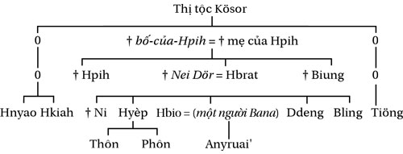

Tiếp thị tốt chỉ làm sản phẩm tồi thất bại nhanh hơn
- David Olgilvy
1) SẴN SÀNG CHO KHÓ KHĂN VÀ THAY ĐỔI
Để thực thi xuất sắc, bạn cần chuẩn bị cho hai điều: khó khăn và thay đổi. Khi có sự sẵn sàng, bạn sẽ không quá bất ngờ khi nó diễn ra.
Đầu tiên là khó khăn, đó là chủ đề chính của cuốn sách này.
Khởi nghiệp chưa bao giờ là điều dễ dàng. Bạn không thể làm giàu bằng cách giải quyết những vấn đề dễ dàng. Hãy sẵn sàng cho thử thách đón nhận thất bại như là điều hiển nhiên để đánh giá và điều chỉnh. Đây là sự thật: Bạn chỉ thất bại khi từ bỏ và quay đầu làm diễn viên cho Kịch Bản Cuộc Đời.
Mọi thứ diễn ra trong hành trình khởi nghiệp là cơ hội cho bạn để tiếp tục hành động, đánh giá và điều chỉnh. Như tôi đã đề cập, thất bại là mẹ thành công. Khi bạn từ chối thất bại, bạn không thể tìm thấy thành công. Đối với tôi, thất bại chỉ là sai lầm trong hành động, đánh giá và điều chỉnh.
Kế đến, hãy sẵn sàng để thay đổi. Khi bạn học được cách hành động, đánh giá và điều chỉnh, mục tiêu kinh doanh có thể sẽ thay đổi. Khi tôi bắt đầu khởi nghiệp, mục tiêu ban đầu không phải là bán dịch vụ, nhưng lại kết thúc ở đó. Chính phản hồi của thị trường sẽ quyết định.
Tương tự, Amazon bắt đầu kinh doanh bán sách. PayPal ban đầu là để xử lý thanh toán cho eBay. Còn eBay? Pierre Omidyar bắt đầu nó như là một chợ đấu giá sau khi kiếm được một khoản lời từ bán máy chiếu laser. Ban đầu, ông muốn khởi sự Etsy nhưng rồi lại làm eBay. Ý của tôi ở đây là bạn muốn đến điểm A nhưng thị trường sẽ đưa bạn đến điểm B.
2) TẬP TRUNG
Tập trung là đặc tính của những doanh nhân hàng đầu. Từ Richard Branson cho đến John Paul DeJoria, David Geffen – những doanh nhân nổi tiếng đều vì: họ tập trung vào một mục tiêu kinh doanh và chỉ một. Chỉ sau khi thành công vang dội, họ mới đa dạng hóa. Đừng bị lừa bởi những doanh nhân có hàng chục dự án kinh doanh khác nhau. Bạn chưa có trong tay vài triệu đô-la nên trước hết bạn cần tập trung.
Điều này cũng giống như là khi bạn lập gia đình. Nếu có sáu bà vợ/ông chồng cần chia sẻ tình cảm thì làm sao bạn có thể đảm bảo được?
Bất cứ khi nào tôi thấy các doanh nhân trẻ nói: “Tôi có sáu công ty”, điều này đối với tôi có nghĩa là: “Tôi có sáu công ty không ra gì”. Một sản phẩm xuất sắc chính là điều bạn cần – những việc kinh doanh khác chỉ làm bạn bị chi phối, mất tập trung.
Tập trung vào một thứ trước khi đa dạng hóa. Bạn có thể tạo ra thứ tốt nhất – nhưng nó cần tập trung và chỉ tập trung vào một thứ. Bất kể sản phẩm kinh doanh của bạn là gì, hãy tập trung toàn bộ thời gian và nguồn lực vào nó. Thực thi là công việc khó khăn. Mất tập trung nghĩa là bạn sẽ bị người khác cạnh tranh. Làm việc tuần bốn giờ thử xem sao trước sự cạnh tranh của người làm việc mười giờ một ngày. Bạn không thể viện cớ chỉ cần làm việc thông minh hơn. Cái bạn cần là cả chăm chỉ và thông minh.
3) CÂN BẰNG LÀ ĐIỀU VỚ VẨN
“Chìa khóa của hạnh phúc là một cuộc sống cân bằng.”
“7 Bí quyết để sống cân bằng và không có áp lực.”
Hãy cẩn thận với những lời khuyên vớ vẩn này từ những “anh hùng bàn phím”. Bạn nghĩ Michael Phelps dùng cách gì để đạt được hai mươi ba huy chương vàng Olympic? Có phải cuộc sống cân bằng giúp Michael Jordan thắng sáu giải vô địch NBA?
Sự thật là: Cân bằng chính là một trong những cái bẫy của Kịch Bản Cuộc Đời. Tại sao nó muốn bạn “cân bằng”? Lý do là khi đó bạn sẽ ở giữa – trung bình, bình thường và tầm thường. Cân bằng là thứ vớ vẩn – trừ khi bạn muốn có cái kết như kịch bản. Một lần nữa, tôi xin nhắc lại lối thoát cho chúng ta chính là làm ngược lại những gì đám đông cổ xúy. Thành công đến từ việc mất cân bằng. Cuộc đời đáng sống không phải là cuộc sống cân bằng; nó đáng sống vì nó có nhiều kịch tính từ việc mất cân bằng.
Khi tôi khởi nghiệp, có rất nhiều ngày làm việc liên tục mười hai tiếng. Và dĩ nhiên, có một số mối quan hệ bị ảnh hưởng. Khi tôi viết cuốn sách đầu tiên, tôi giam mình ở một nơi riêng biệt và viết ba mươi ngày liền.
Scott DeLong, nhà sáng lập ViralNova, và sau này bán với giá 100 triệu đô-la, viết:
Tôi dành năm năm hoàn toàn tập trung vào khởi nghiệp. Trong thời gian đó, tôi không biết đến giải trí là gì. Tuy nhiên, bây giờ khi đã thành triệu phú, tôi tự do và có rất nhiều thứ để tận hưởng. Nó khó khăn, nhưng đáng giá. Hãy tập trung khi khởi nghiệp… bạn không thể thất bại nếu sẵn sàng hy sinh và làm bất cứ điều gì để có được điều mình muốn. Và đó chính là điều quan trọng nhất.
Cũng giống như DeLong, bây giờ tôi có cuộc sống tôi muốn – phần thưởng từ khoảng thời gian mất cân bằng. À, nghịch lý ở đây là để có được cân bằng trong dài hạn, bạn cần mất cân bằng trong ngắn hạn. Nếu phải khởi nghiệp thêm lần nữa, tôi biết cân bằng sẽ không thể tạo ra thành công. Hãy quyết định điều gì quan trọng với bạn: cân bằng trong tầm thường tẻ nhạt hay tạm thời mất cân bằng để đổi lấy cuộc sống bạn muốn.
4) MÔI TRƯỜNG
Tôi là thành viên của ba câu lạc bộ gym khác nhau. Dù có một câu lạc bộ ở ngay gần nhà nhưng tôi lại chọn chỗ xa nhất là Lifetime Fitness. Tại sao?
Câu lạc bộ gần nhà không phải là môi trường lý tưởng để tôi tranh đua. Tại đây, tôi không những là người trẻ nhất mà còn là người có cơ bắp nhất. Trái lại, tôi không có gì nổi bật tại câu lạc bộ Lifetime. Nơi đây có các vận động viên thể hình chuyên nghiệp, người mẫu, điều này giúp tạo động lực để tôi nỗ lực hơn.
Tương tự đối với môi trường của bạn. Tôi thú thực nếu không rời Chicago đến Phoenix để thay đổi môi trường chắc tôi không thể có thành công như ngày hôm nay. Ý của tôi là hãy tìm môi trường phù hợp nhất cho bạn. Không chỉ là để tập gym mà còn cho cả cuộc sống. Hãy tìm một nơi có thể hỗ trợ và khuyến khích bạn. Nếu môi trường hiện tại ngăn trở, bạn có quyền tự do lựa chọn để thay đổi.
5) CỨ LÀM XEM SAO
Chúng ta đang sống trong thời đại kỳ diệu. Nếu bạn có khát khao và tài năng, bạn không cần xin phép ai để thực hiện ước mơ của mình.
Nhiều năm trước, muốn xuất bản sách thì bạn phải bước qua sự kiểm tra gắt gao của nhà xuất bản. Bạn không thể làm gì khác ngoài chờ đợi và hy vọng. Tuy thế, ngày nay đã khác. Nếu bạn khát khao và quyết tâm, bạn không cần xin phép ai nữa.
Chìa khóa để mở ra ước mơ của bạn chính là: YouTube, Instagram, Amazon và các nền tảng chia sẻ trực tuyến khác. Nếu bạn muốn, hãy để thị trường quyết định xem khả năng của bạn như thế nào. Có rất nhiều câu chuyện phổ biến ngày nay với một mô thức tương tự: tài năng bị các chuyên gia từ chối nhưng được cộng đồng đánh giá cao và trở nên giàu có, nổi tiếng. Như các trường hợp của Arnel Pineda, Ted Williams, Lindsey Stirling và cả Justin Bieber.
Tương tự với trường hợp của tôi, nếu tôi phải chờ đợi và hy vọng vào các nhà xuất bản, chắc chắn sách của tôi sẽ không bao giờ được ra mắt độc giả.
Bạn thấy đấy, giờ đây điều duy nhất có thể ngăn cản chính là sự lo sợ – từ chính bạn. Nếu muốn hát, muốn làm diễn viên, hãy đưa thẳng tài năng của bạn đến cho mọi người xem thử như thế nào.
6) CÁ NHÂN HÓA THƯƠNG HIỆU
Một sản phẩm xuất sắc đi cùng với một thương hiệu. Đằng sau các khách hàng trung thành là một kết nối chặt chẽ với thương hiệu. Nếu bạn muốn công việc kinh doanh tiến triển mạnh mẽ và bền vững, bạn cần phải có một chiến lược hiệu quả cho thương hiệu.
Tuy thế, làm thương hiệu không phải là việc đơn giản. Đối với người không chuyên, nó có nghĩa là logo, slogan. Tuy nhiên, đối với dân chuyên nghiệp, thương hiệu là nghệ thuật để đem các phẩm chất của con người vào công việc kinh doanh để nó phản ánh bản sắc của khách hàng.
Hãy suy nghĩ về điều đó. Một thương hiệu mạnh mẽ phản ánh cá tính của khách hàng và kết quả là nó trở thành yếu tố ảnh hưởng đến quyết định mua hàng của khách hàng. Hãy xem thử thương hiệu Harley-Davidson. Bạn nghĩ khách hàng của họ là ai? Người mạo hiểm hay thích an toàn? Còn Nike thì sao?
Một nhãn hiệu mạnh mẽ kết nối với cá tính riêng của các khách hàng mục tiêu. Hãy xem xét thử các thương hiệu này sẽ phản ánh cá tính gì của khách hàng: Louis Vuitton, Apple, Wrangler, Ferrari, Volvo.
7) XÂY DỰNG THƯƠNG HIỆU
“Cảm ơn bạn đã chờ; cuộc gọi của bạn có ý nghĩa quan trọng đối với chúng tôi…”.
Thật vậy à!? Tôi không tin thế. Nếu quan trọng, tại sao tôi phải ngồi đây nghe nhạc chờ như nhạc đám ma.
Chưa hết. Bạn có thấy khó chịu khi phải bấm 1,*, 2, 2, 1, 1 và 0 để nói chuyện với người cần gặp?
Ý của tôi là thương hiệu không được tạo ra bởi bất kỳ thứ gì – mà là do nó xứng đáng. Giống như danh tiếng của một người, nó được tạo ra từ cam kết, từ hành động nhất quán. Do đó, xây dựng thương hiệu bắt đầu bằng cách xác định xem bạn muốn khách hàng sẽ nhận diện công ty của bạn như thế nào.
Nếu nó là một con người, ai sẽ là bạn bè của nó? Nó sẽ đại diện cho điều gì và nó sẽ làm gì để phản ánh điều đó? Đừng nhầm lẫn nó với giá trị khác biệt – nó chỉ là một phần của thương hiệu. Đằng sau nó là hình ảnh khác biệt do chính khách hàng cảm nhận được.
Sau khi định vị được thương hiệu, bạn xác định những việc cần làm để tạo ra điều đó. Nó có phải là hoàn tiền ngay nếu không hài lòng? Hay nói chuyện ngay với nhân viên mà không cần phải bấm thêm số nào? Hay là hình ảnh thân thiện với môi trường? Hành động nhất quán với thương hiệu phải được đưa vào từng chi tiết trong vận hành, từ bạn cho đến các nhân viên.
8) BÁN HÀNG
Thực thi có nghĩa là hành động, đánh giá và điều chỉnh, nhưng nó cũng có nghĩa là bán hàng, tiếp thị và truyền thông. Nếu bạn không còn ý tưởng gì, đây là điều tốt nhất bạn có thể làm: học cách bán hàng.
Bán hàng là kỹ năng quan trọng nhất, bất kể bạn kinh doanh gì. Kỹ năng này sẽ giúp bạn kiếm bộn tiền.
Hãy nhớ lại, dù có sản phẩm tốt nhất nhưng nó sẽ vô giá trị nếu bạn không thể thuyết phục được ai mua hàng – và từ đó bắt rễ tạo nên sản phẩm xuất sắc. Bạn dùng kỹ năng này ở mọi nơi, dù là với khách hàng, nhà đầu tư, nhân viên, nhà cung cấp và ngay cả với người thân trong gia đình. Sau đây là một số cách:
KỂ CHUYỆN
Nếu bạn muốn bán thêm hàng, hãy cho sản phẩm của bạn một câu chuyện. Con người thích những câu chuyện vì đó là cách chúng ta định hình thế giới này. Kết nối sản phẩm với một câu chuyện hấp dẫn sẽ tạo ra sức hút với khách hàng. Và khi câu chuyện đó gia cố thêm cá tính của khách hàng, nó giúp bạn xây dựng thương hiệu.
Ví dụ như câu chuyện về sản phẩm của Stur trên trang web SturDrinks.com:
Trong khi mang thai Stur, bác sĩ khuyên mẹ bé nên uống tám đến mười ly nước mỗi ngày. Tuy thế, như nhiều người khác, bà không thể uống đủ lượng nước này. Để giúp vợ mình, tôi bắt đầu tìm kiếm các loại nước có hương vị tự nhiên dễ uống nhưng không thể tìm thấy. Do đó, tôi quyết định tự làm từ các loại nước trái cây tự nhiên. Tôi mất hơn một năm để thử nghiệm mới có được sản phẩm ưng ý và hoàn toàn không có chất nhân tạo.
Chưa dừng lại ở đó, trang web còn có các câu chuyện để dành một phần lợi nhuận giúp đỡ các tổ chức từ thiện cung cấp nước sạch. Tuy thế, bạn có chú ý thấy sản phẩm được tạo ra từ nhu cầu thực sự chứ không phải do đam mê gì cả. Nhà sáng lập giải thích thêm:
Khi mới kể cho người thân và bạn bè về sản phẩm này, ai cũng nói tôi bị điên mới dám cạnh tranh với các công ty tỷ đô khác.
Điều này ám chỉ khách hàng mua hàng sẽ giúp một người chồng đang lo cho gia đình – chứ không phải một công ty nào đó. Bạn sẽ muốn mua hàng từ ai?
Hãy kể cho khách hàng nghe câu chuyện giải thích lý do vì sao có sản phẩm của bạn một cách chân thành, trung thực. Khi có được sự kết nối với họ, khách hàng sẽ chọn bạn.
THÂN THIỆN
Sự thật là con người muốn mua hàng từ người mà họ thích chứ không phải từ một công ty, tổ chức nào đó.
Do đó, cách tốt nhất để làm cho sản phẩm thân thiện hơn là dùng hình ảnh thật của cá nhân. Ví dụ, cuốn sách đầu tiên của tôi, trên trang web quảng bá sách có rất nhiều hình ảnh của tôi từ lúc mới học lớp bốn cho đến năm tôi bốn mươi tuổi. Lý do tôi làm điều này là vì nghiên cứu chỉ ra trang giới thiệu về tác giả (hay sản phẩm) là trang mà nhiều người sẽ xem nhất. Hãy làm trang này nổi bật nhất bằng hình ảnh thân thiện thay vì vòng vo.
Nếu bạn có nhân viên hay một nhóm làm việc cùng, hãy đưa lên các hình ảnh thật của họ – như đang làm việc, vui chơi…
Một cách khác là tương tác với khách hàng thông qua mạng xã hội. Tôi không dành nhiều thời gian trên mạng xã hội, nhưng nếu có khách hàng tương tác, tôi sẽ tự tay dành thời gian để trả lời. Tương tự với các email – dù có rất nhiều.
THU HÚT SỰ CHÚ Ý, MỤC ĐÍCH, Ý NGHĨA
Lợi ích đem lại cho tôi là gì?
Đó là câu hỏi quyết định. Bạn càng cho khách hàng thấy câu trả lời nhanh và rõ ràng, bạn càng nhanh chóng bán được hàng. Hãy bỏ qua các thứ hào nhoáng khác – hãy cho họ thấy ngay các lợi ích. Nếu bạn có rất nhiều giá trị khác biệt, hãy chuyển hóa nó thành các lợi ích nổi bật. Hãy truyền tải rõ ràng những giá trị bạn sẽ mang lại cho khách hàng. Chiến dịch quảng cáo của bạn luôn phải tập trung vào những giá trị quan trọng nhất, đừng để khách hàng phải suy nghĩ về điều đó.
Ngạc nhiên là rất nhiều doanh nhân không làm được điều này.
Bạn chỉ có ít giây ngắn ngủi để thu hút sự chú ý của khách hàng. Do đó, hãy làm nổi bật ngay những tiện ích quan trọng trong phần tiêu đề. Hãy làm cho nó rõ ràng và dễ hiểu. Ví dụ, đây là tiêu đề cuốn sách The Millionaire Fastlane của tôi: “Liệu bạn có khả năng khởi nghiệp để trở thành triệu phú?”. Tiêu đề này chỉ ra rõ ràng đây là cuốn sách về kinh doanh làm giàu, độc giả không cần mất thời gian suy đoán mà có thể nhận ra ngay.
Một cách khác là dùng mục đích và ý nghĩa để thu hút khách hàng. Đa số nhân loại ngày nay không có mục đích sống ngoài việc kiếm tiền trả nợ và sống mòn. Khi mô hình kinh doanh có được một ý nghĩa xã hội nào đó – tự nhiên nó có một lợi thế nhất định. Tại sao?
Bởi vì các nghiên cứu chỉ ra điều đó sẽ giúp chúng ta nhận ra mình thuộc một nhóm nào đó, nó tạo ra ý nghĩa của cuộc sống. Đó là lý do vì sao nhiều người hâm mộ các đội bóng, các cầu thủ ngôi sao – họ và các fan trung thành cùng chia sẻ một mục đích. Điều tương tự cũng diễn ra với các tổ chức, trường học và ngay cả với những doanh nghiệp khổng lồ như Apple.
Nếu sản phẩm của bạn có thể kết nối được với mục đích hay ý nghĩa của khách hàng, bạn sẽ làm tốt. Thật vậy, tôi cũng hy vọng cuốn sách này làm được điều tương tự: truyền lửa cho khát vọng của bạn về cách sống tự do, không làm theo kịch bản.
ĐẶT ƯU TIÊN CHO CÁC ĐÁNH GIÁ TÍCH CỰC TỪ MẠNG XÃ HỘI
Hãy nhớ lại ba thứ gần đây nhất bạn mua. Đối với tôi, những quyết định mua hàng không đến từ những quảng cáo bán hàng mà là từ đánh giá trên mạng xã hội.
Bí mật để bán hàng tốt nhất chính là từ những lời đánh giá và giới thiệu của những người cùng trang lứa. Đó là những lời giới thiệu từ những người thân, bạn bè, hàng xóm, những người đã từng mua hàng. Trong thời buổi của nền kinh tế “chia sẻ”, những đánh giá trên mạng xã hội có tính chi phối đối với quyết định mua hàng - chứ không phải từ quảng cáo. Đằng sau sự tăng trưởng thần kỳ của bất kỳ công ty nào là những đánh giá tích cực về sản phẩm xuất sắc.
Tuy nhiên, điều không may là chúng ta không có cách đo lường điều này. Đó là lý do vì sao có rất ít sách vở nói về điều này. Cách đánh giá duy nhất là tham khảo chi phí để tìm kiếm khách hàng. Nếu quảng cáo phải tốn chi phí, thì những đánh giá này giúp tạo ra doanh thu bán hàng mà không tốn một xu nào.
Đối với một sản phẩm xuất sắc, những đánh giá tích cực trên mạng xã hội chính là chìa khóa. Hàng ngày, tôi đều nhận được những đánh giá tích cực từ sách của mình. Nhiều năm trước, khi tôi nhận được những lời đánh giá ấy, tôi đều dành thời gian để cảm ơn từng người. Tuy nhiên, tôi luôn nhờ độc giả để lại bình luận trên trang bán hàng Amazon. Tôi không yêu cầu là phải đánh giá tích cực, mà là chỉ đánh giá. Vì độc giả đã có ý kiến tích cực, nên khả năng rất cao đó sẽ là bình luận tích cực.
Tương tự như thế, bất kỳ khi nào có thành viên mới trên diễn đàn của tôi, họ sẽ thấy các đánh giá tích cực về sách của tôi. Có những bài viết lên đến hơn ba ngàn bình luận và 99% trong đó là đánh giá tích cực. Nếu thành viên mới thấy bài viết này, khả năng rất cao là họ sẽ mua sách.
Do đó, bất cứ khi nào bạn nhận được đánh giá tích cực, hãy lưu ý ngay và dùng nó trong các quảng cáo, trên trang web bán hàng. Nếu đánh giá đến từ email, hãy xin phép họ sử dụng nó.
9) BỎ QUA CÁI TÔI
Có lần Mark Twain nói: “Điều đưa chúng ta đến rắc rối không phải là những gì mình không biết mà chính là những điều chúng ta biết chắc nhưng lại không hẳn đã đúng”.
Dường như bất kỳ trang web nào ngày nay cũng có những “pop-up” tự động chen ngang để thu thập địa chỉ email của người dùng. Sau hơn hai mươi năm lướt web, tôi chưa từng cung cấp địa chỉ email và rất ghét những pop-up kiểu này. Tuy thế, tôi vẫn dùng nó trên trang web của mình vì nó hiệu quả.
Nhiều năm trước, tôi nghiên cứu cách làm sao để xây dựng danh sách email khách hàng. Nghiên cứu chỉ ra các pop-up chen ngang chính là cách hiệu quả nhất. Do đó, tôi bỏ qua thiên kiến sai lệch của mình và áp dụng cách này.
Vì thế, khởi nghiệp kinh doanh đã là khó khăn, đừng để tầm nhìn, thiên kiến sai lệch của mình làm cho nó khó khăn hơn. Một lần nữa, tôi xin nhắc lại: nhận thức của bạn không phải là thực tế.
10) CẨN THẬN VỚI SEO
SEO là thủ thuật để tăng thứ hạng tìm kiếm từ khóa từ các công cụ tìm kiếm. Nếu từ khóa sản phẩm liên quan của bạn có thứ hạng cao trên các công cụ này, ví dụ Google, nó sẽ giúp mở rộng biên độ lợi nhuận và giảm thiểu chi phí tìm kiếm khách hàng. Về căn bản, nó mô phỏng hiệu quả giống như sản phẩm xuất sắc. Tuy thế, điều này chưa hẳn là lúc nào cũng tốt.
Đây là lý do: bạn không thể nắm quyền kiểm soát nó. Hằng năm, Google và các công cụ tìm kiếm khác thay đổi thuật toán. Và khi nó thay đổi, mọi công sức của bạn đổ vào làm SEO rất có thể đổ sông đổ bể.
Hãy để tôi làm rõ, nếu bạn kinh doanh phụ thuộc vào SEO, bạn không phải đang làm kinh doanh. Do đó, bạn chỉ nên xem nó là một phần của chiến lược thực thi chứ không phải hoàn toàn phụ thuộc vào nó.
Và đây là điều nghịch lý từ SEO, nó tương tự như với tiền. Diễn đàn của tôi có hàng triệu thành viên hằng năm đến từ SEO. Bạn có biết tôi bỏ ra chi phí bao nhiêu cho nó không?
Không xu nào cả.
Thay vào đó, tôi tập trung vào việc tạo ra nội dung có giá trị, và thông qua đó Google tự xem xét, đưa ra đánh giá và xếp hạng. Điều này cũng giống như với tiền – bạn không thể chạy theo tiền mà thu hút nó bằng cách tạo ra giá trị.
11) KHÔNG CHẠY THEO XU HƯỚNG (TRỪ KHI BẠN MUỐN CÓ KINH NGHIỆM)
Năm 1982, phong trào kinh doanh vớ làm ấm chân nở rộ. Câu hỏi là “Bạn có nên kinh doanh sản phẩm này vào năm đó, hay là ngay bây giờ?”. Trong cả hai trường hợp, đây là một ý tưởng kinh doanh không ổn. Tại sao? Bởi vì đó chỉ là phong trào – và nó sẽ nhanh chóng suy tàn. Và nếu phong trào không còn, công việc kinh doanh liên quan cũng thế.
Tôi đưa ra điều này vì có rất nhiều doanh nhân lãng phí thời gian kinh doanh các sản phẩm theo xu hướng, phong trào. Bạn không thể kiếm được số tiền đủ lớn để đòi lại cuộc sống tự do theo cách kinh doanh này, trừ khi bạn muốn có thêm kinh nghiệm.
12) ĐỪNG MANG CHÍNH TRỊ VÀO KINH DOANH
Vào tháng 11 năm 2016, Kelloggs – một công ty thực phẩm đa quốc gia – thông báo sẽ không quảng cáo trên trang web Breitbart.com nữa. Đây là một trang web có hơn bốn mươi lăm triệu độc giả. Lý do họ đưa ra là “Không phù hợp với giá trị của công ty”.
Kết quả là, Breitbart bắt đầu chiến dịch tẩy chay các sản phẩm của Kelloggs. Chỉ vài ngày sau, hơn bốn trăm ngàn độc giả đã tham gia chiến dịch này và còn chia sẻ nó rộng rãi trên các trang mạng xã hội. Vài tháng sau, doanh thu của Kelloggs chạm đáy.
Trừ khi bạn làm chính trị, đừng bao giờ đưa chính trị vào kinh doanh. Chính trị là thứ duy nhất có thể đe dọa một sản phẩm xuất sắc. Trong sách này của tôi có đôi chỗ liên quan đến chính trị, tuy nhiên tôi viết sách này không nhằm mục đích kinh doanh.
13) KHÔNG PHẢI AI CŨNG THÍCH BẠN
Hãy sẵn sàng, bạn sẽ bị người khác chỉ trích. Không phải ai cũng sẽ thích sản phẩm của bạn. Một số người thậm chí còn dành thời gian để tấn công bạn. Điều này là bình thường. Điều tốt nhất bạn có thể làm là: đánh giá, điều chỉnh và hành động, hoặc bỏ qua. Thật vậy, nếu bạn lo sợ bị chỉ trích hay lo lắng về những gì “người khác sẽ nói”, hãy từ bỏ kinh doanh ngay và quay về cập nhật hồ sơ xin việc.
